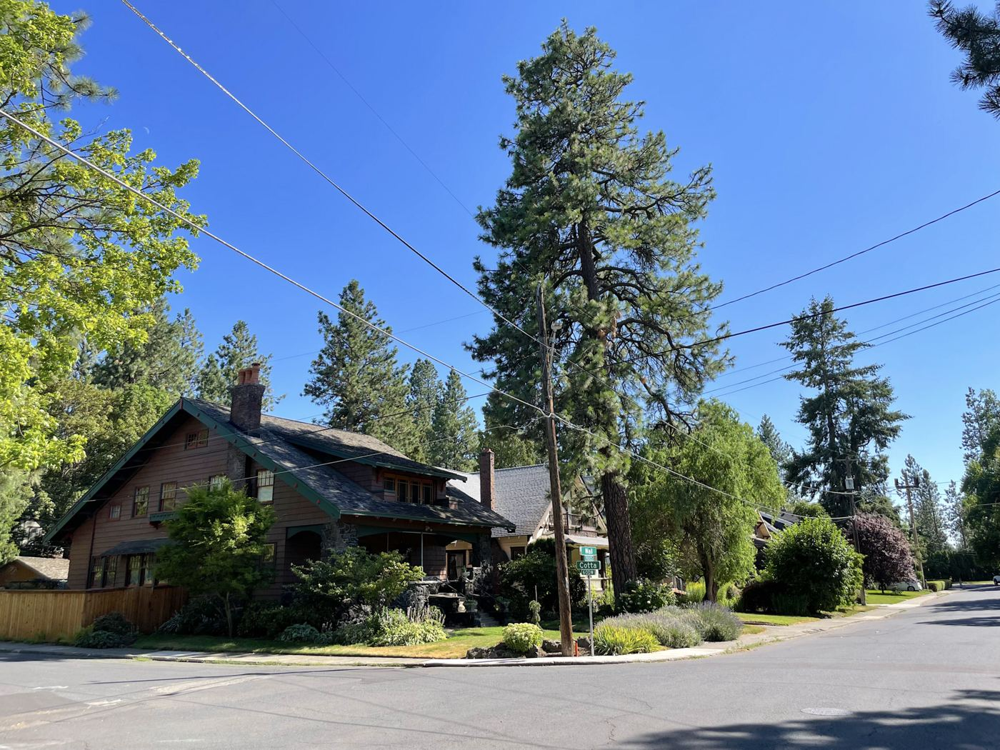
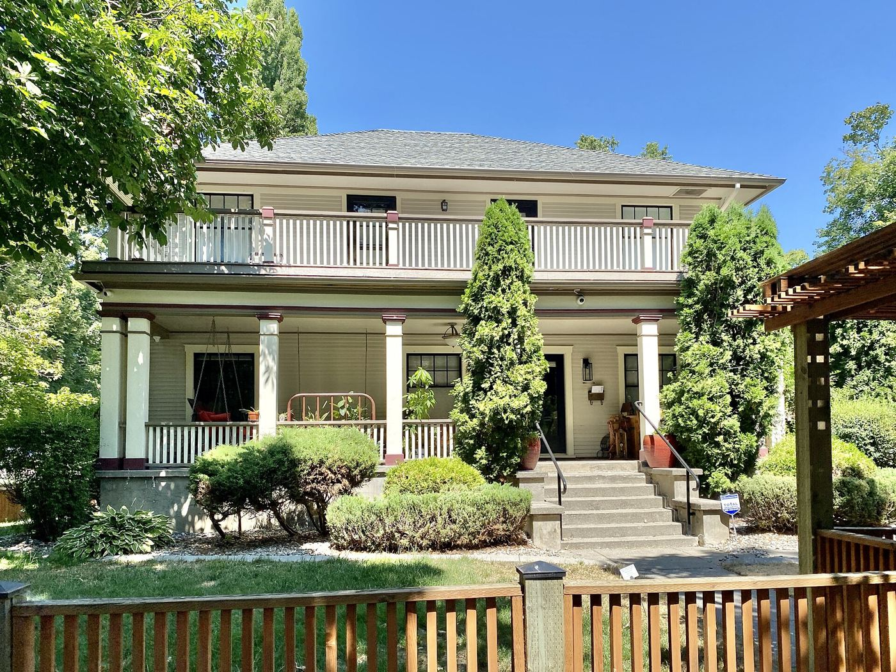

Reviews
Here are some recent ones. We didn't pick only the glowing ones. One of these is a 4-star review, and he had a fair point.
★★★★★
We bought a 1912 house on the South Hill and had no idea what we were getting into. Tyler walked us through the whole repipe, what needed to happen now and what could wait. The crew was careful with the old woodwork. The water pressure is unreal now.
★★★★★
frozen pipe in the crawlspace in january. jen talked me through shutting off the water over the phone while luis was on his way. lifesavers
★★★★★
Two other companies told me I needed a $14,000 sewer replacement. Ray ran a camera, showed me the video, and said it was one bad joint near the foundation. Fixed it for $3,900. I've sent him to half my street.
★★★★★
Good work and a fair price on our kitchen drain. The only reason it's not 5 stars is it took two days to get on the schedule. They were upfront about that when I called, though, and I'd use them again.
★★★★★
I manage a few rentals near Gonzaga and Northside is who I call. They text the tenant before they show up, they send me photos of the work, and the invoices are clear. That's hard to find.
★★★★★
Water heater died on a Sunday night, of course. Called Monday at 7:10 and Marcus was here by 10 with a new one on the truck. Told me the price before he touched anything and that's what I paid. Took the old tank with him.
★★★★★
Our basement floor drain backed up the night before Thanksgiving, with 14 people coming. They squeezed us in at 6pm. It was roots in the line. Ray said they'd come back in a year or two and gave us a price to fix it properly whenever we're ready. No pressure at all.
★★★★★
Had them do a sewer scope before we closed on our house. They found a sag in the line and we got the sellers to pay for the repair. Best $225 we spent in the whole process.
★★★★★
They told me NOT to replace my water heater yet. Flushed it, put in a new anode rod, about $200 total. Who does that?
★★★★★
Fixed a running toilet and a leaky hose bib in one trip. On time, booties on, nice guys.
★★★★★
We've used them since 2006. Ray put in our first water heater and his son put in the second one. Same price-before-we-start deal both times.
★★★★★
Called about a slow leak under the bathroom sink, figured it'd be a big deal. Twenty minutes and a new supply line. He showed me where my main shutoff was on his way out and put a tag on it.



Used us before?
Reviews are how most new customers find us, and we read every one, good or bad. If we did work for you, we'd appreciate you leaving one.